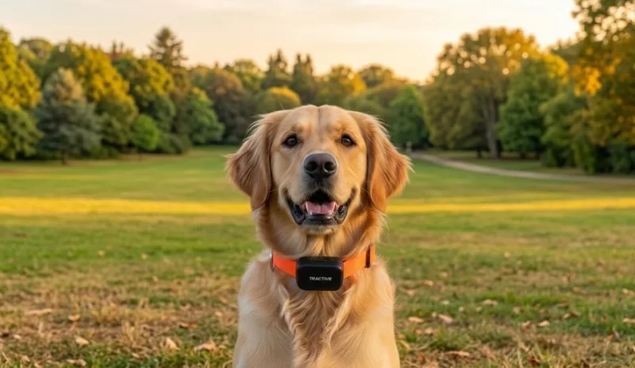
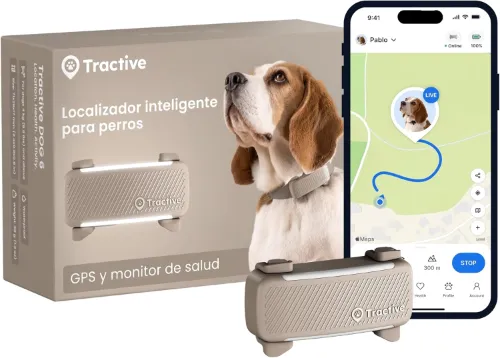
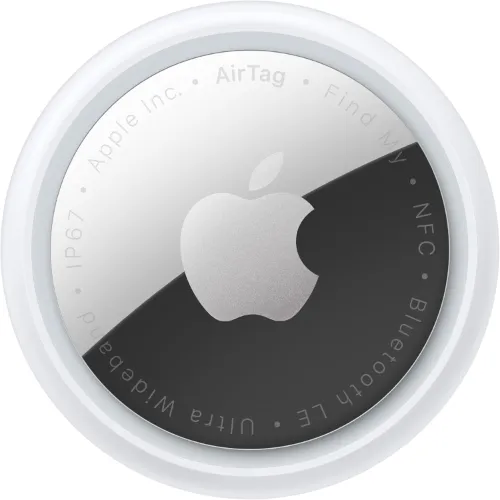
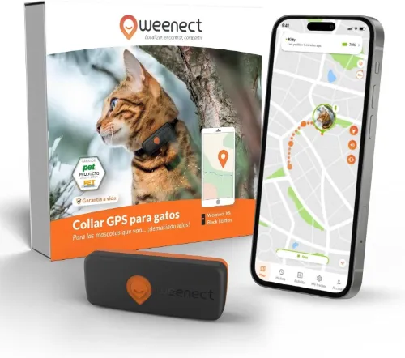

Localización sin límites: Los 3 mejores rastreadores de 2026

La seguridad de nuestras mascotas ha evolucionado. Ya no basta con una placa con el nombre; en 2026 queremos saber dónde están en tiempo real. Analizamos las mejores opciones para que no vuelvas a sentir ese miedo al soltar a tu perro en el parque.
1. Tractive GPS Dog 4: El Rastreador Definitivo

Si no te suena por el nombre del collar, seguro que si te digo que Dani Rovira protagonizaba su anuncio en televisión ya te va sonando. Y es que, Tractive es una de las marcas más reconocidas en el sector. Y no es para menos, cuenta con una tarjeta SIM integrada que se conecta a las redes móviles para enviar la posición GPS exacta a tu móvil cada 2-3 segundos en modo "LIVE".
También permite crear vallas virtuales, como por ejemplo el cercado de jardín, avisándote si las traspasa. Es impermeable y muy resistente y monitoriza su actividad y sueño. Es el complemento ideal para las mascotas que viven en zonas rurales. Eso sí, requiere de una suscripción mensual.
Rastreo en tiempo real ilimitado, cobertura mundial.
Requiere suscripción mensual y la batería dura unos 7-10 días.
2. Apple AirTag: La Opción Urbana Low-Cost

A pesar de no ser un GPS, lo incluimos en esta lista porque para todos aquellos cosmopolitas que no salen de la ciudad es más que suficiente. Y es que utiliza la red "Buscar" de Apple, aprovechando los millones de iPhones que hay por la calle para localizarse. Su punto fuerte es sin duda, que no tiene cuotas mensuales y su precio es muy económico. Aparte de que la pila dura un año entero. Es ideal para gatos, y perros en zonas urbanas, sin embargo, si se pierden en una zona despoblada donde no pase nadie con un iPhone, el AirTag no servirá de nada. Otro punto que no nos gusta es que no incluye funda ni collar, hay que comprarlo por separado.
Sin suscripciones, batería de un año y tamaño muy compacto.
Inútil en zonas rurales y solo para usuarios de iPhone.
3. Weenect Cats 2: Especial para Felinos

Un GPS pensado para todos que tenéis un gato aventurero, al que le gusta salir de parranda. Es el modelo más pequeño y ligero del mercado y se ha diseñado para ellos. Incluye modo "timbre" que lo hace vibrar cuando lo activas desde el móvil, es muy útil para entrenar a tu gato a volver a casa a la hora toca comer. De la misma manera que el primer localizador de esta lista, funciona con suscripción, pero ofrece un rastreo sin límite de distancia. Es la mejor forma de descubrir por dónde cotillea tu gato cuando no estás.
Tamaño mini ideal para gatos y función de adiestramiento por sonido.
El collar de seguridad incluido es algo rígido al principio.